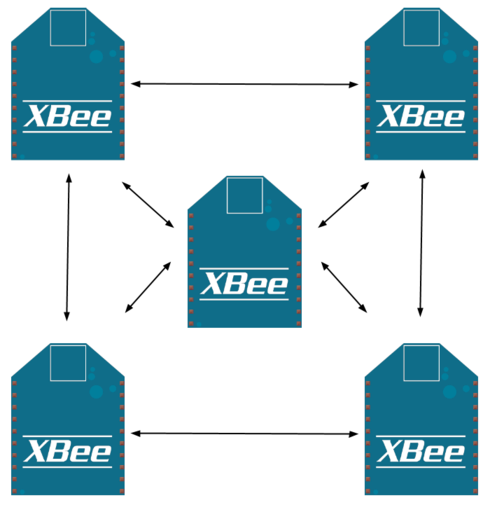

- Découverte de XBee
- Modes de communication
- Configurer son XBee
- Communiquer via XBee: ordi <-> Arduino
- Communiquer via XBee: Arduino <-> Arduino
- Communiquer via XBee: Arduino vers plusieurs Arduino
- Communiquer via XBee: Arduino <-> Web
- Travaux de groupe
Au programme
Découverte de XBee
Découverte de XBee
XBee est un module de communication sans fil reposant sur la norme 802.15.4 et le protocole ZigBee.
Il s'agit d'une norme pour les réseaux sans fil personnels à faible consommation (LR-WPAN : Low Rate Wireless Personal Area Network)

Découverte de XBee
Les principales caractéristiques du XBee 1:
- portée : ~30m max en milieu urbain et intérieur, ~90m en extérieur dégagé
- faible débit : 250kbps
- faible consommation : ~50mA à 3.3V
- communication série (UART)
- mise en place de réseaux point à point ou en étoile
- cout relativement peu élevé (~25€)
- sécurité : chiffrement AES 128 bits
Découverte de XBee
- communication directe depuis entrées/sorties analogiques et digitales
- I/O "line passing" : un DIO (configuré en input) sur un XBee active un DIO (configuré en output) sur un autre XBee

Modes de communication
Point à point
Point à point
- Mode par défaut
- Les deux XBee doivent être sur le même réseau (PAN ID) et le même canal RF
- Envoi sur une adresse spécifique du réseau.
- le receveur envoie un message de confirmation de réception (ACK) à l'emmetteur
- l'emmetteur renvoie le message jusqu'à 3 fois ou jusqu'à réception de l'ACK
API

API
- Les deux XBee doivent être sur le même réseau (PAN ID) et le même canal RF
- L'adresse du destinataire se trouve dans le message lui même
- Possibilité de communiquer avec plusieurs autres XBees
- Possibilité simple d'envoyer un message à plusieurs XBees en même temps (broadcast)
Nos premières commandes AT
Configurer XBee
Nos premières commandes AT
Démarrer X-CTU, choisir le port série du XBee puis cliquer sur l'onglet Terminal


Nos premières commandes AT
+++: passer en mode commande AT, attendre le OK de retourATID(+ param de 0000 à FFFF) : lit ou modifie l'ID du réseau XBee (PAN ID)ATMY(+ param de 0000 à FFFF) : lit ou modifie l'adresse du XBeeATDL(+ param de 0000 à FFFF) : lit ou modifie l'adresse du XBee de destinationATWR: sauve les paramètres dans la mémoire du XBee, attendre le OK de retourATRE: restaure les paramêtres par défaut d'usine du XBeeATCN: quitte le mode configuration
Communiquer via XBee
ordi <-> Arduino
Montage XBee <-> Arduino

Configuration du XBee "ordi"
- Partir d'une configuration d'usine
ATIDà 1ATMYà 1ATDLà 2- Sauvegarder et quitter le mode commande
Configuration du XBee "arduino"
- Partir d'une configuration d'usine
ATIDà 1ATMYà 2ATDLà 1- Sauvegarder et quitter le mode commande
Programmation de l'arduino
Ecrire un programme qui :
- allume la led 13 lorsque
1est reçu - éteind la led 13 lorsque
0est reçu
Lorsque le XBee est branché sur l'arduino cela condamne l'upload de programme. Débrancher les cables Rx et Tx de l'arduino avant l'upload d'un nouveau programme.
Taper ces 1 et 0 dans X-CTU, connecté au XBee "ordi" et regarder la led s'allumer et s'éteindre.
Modifier le programme à votre guise.
Communiquer via XBee
Arduino <-> Arduino
Montage
Ajouter un bouton sur la PIN 3, pour les deux Arduino.
Configuration
Les deux XBees sont déjà configurés pour communiquer entre eux grace à l'exercice précédent.
Si ce n'est pas le cas reprendre la configuration précédente.
Programmation
Ecrire un programme qui :
- envoie
1lorsque le boutton est pressé - allume la led 13 lorsque
1est reçu
Uploader le même programme sur les deux Arduinos. (N'oubliez pas de débrancher les XBee!!)
Communiquer via XBee
Plus de deux XBee
Plus de deux XBee
La communication "point à point" comme présentée précedemment ne permet pas de choisir le destinataire des messages envoyés par le XBee.
Ce type de communication permet simplement de relayer des messages "série" d'un XBee à un autre.
Pour palier à celà, il existe le mode "API" qui permet de spécifier le destinataire d'un message XBee, à l'image d'un paquet "internet" destiné à une adresse IP.
Utiliser une librairie Arduino
Le format des messages XBee en mode "API" sont spécifiques et complexes. Au lieu de les "créer" à la main, nous pouvons utiliser une librairie qui nous simplifie le travail.
Pour les curieux, vous pouvez toujours aller voir à quoi ressemble une trame XBee ici
Nous allons utiliser la librairie xbee-arduino.
- Téléchargez la : http://xbee-arduino.googlecode.com/files/xbee-arduino-0.4-softwareserial-beta.zip
- Et placez le dossier XBee contenu dans l'archive dans le dossier
librariesde votre sketchbook Arduino.
Configurer un XBee en mode API
Dans X-CTU executez les commandes suivantes :
+++- Restaurer les paramètres d'origine:
ATRE - Activer le mode API :
ATAP2 - Adresse du XBee, chacun une différente :
ATMY1,ATMY2, etc. - Adresse du réseau :
ATID1111 - Canal de radio fréquence :
ATCH0C(c'est un zéro!) - Sauver la conf :
ATWR - Redémarrer le XBee :
ATFR
Programmer l'Arduino
A partir du montage et code précédent (un bouton et une led).
Configurer la librairie Xbee:
#include <XBee.h>
XBee xbee = XBee();
Rx16Response rx16 = Rx16Response();
Tx16Request tx;
uint8_t message[] = {0};
uint16_t adress = 0x0001;
Programmer l'Arduino
Ecouter les messages XBee en lieu et place du port série
xbee.readPacket();
if (xbee.getResponse().isAvailable()) {
if (xbee.getResponse().getApiId() == RX_16_RESPONSE) {
xbee.getResponse().getRx16Response(rx16);
char data = rx16.getData(0);
Envoyer un message XBee API en lieu et place d'un message série
tx = Tx16Request(adress, message, sizeof(message)); xbee.send(tx);
Programmer l'Arduino
Choisissez une adresse parmis celles disponible sur le réseau pour faire clignoter la led d'un autre XBee.
Communiquer via XBee
Arduino <-> Web
Principe général
L'idée est de recevoir les données du Xbee "ordi" dans son programme et de les transférer sur le web. Et inversement.
Il faut donc :
- écouter/communiquer sur le port "série" (USB) sur lequel est connecté le XBee
- traiter les infos reçues
- les "servir" dans une page web, ce qui implique la création d'un serveur
Pleins de langages permettent de faire cela, nous utiliserons Node.js car :
- syntaxe assez facile à prendre en main
- plein de librairies utiles pour ce cas
- gestion évenementielle très adaptée (boucle infinie vs. évènements)
Ecouter le port série
Créer un dossier et s'y placer en ligne de commande, puis installer la librairie d'écoute du port série.
cd /mon/dossier npm install serialport
Il faut que les XBee soient configurés mode "point à point".
Repartir du programme Arduino arduinoArduino et créer un petit programme : test.js
var SerialPort = require('serialport').SerialPort,
xbee = new SerialPort('YOURPORT'); // spécifier votre port
xbee.on('data', function(data) {
console.log(data); // un buffer? décodez le avec data.toString()
});
Travaux de groupe
champ libre, ou presque!
Servir les données en temps réel
HTML5 arrive à notre secours! Grace aux WebSockets un serveur peut communiquer en temps réel sans que l'utilisateur doive recharger la page web!
Au programme:
- Arduino et XBee en mode point à point
- Communication serveur/client
- Node.js, JavaScript, HTML5 et WebSockets
Voir l'exemple arduinoWeb
Controler le monde réel depuis le web
Depuis la page web nous allons requêter le serveur pour que celui-ci transmette la commande voulue au XBee, afin d'allumer lampes et autres dispositifs électriques.
Au programme:
- Arduino et XBee en mode point à point
- Communication serveur/client
- Node.js, JavaScript, HTML5 et WebSockets
Voir l'exemple web
Créer une console de commande
Depuis un Arduino, nous allons commander un ensemble de lampes et autres dispositifs électriques
Au programme:
- Arduino et XBee en mode API
Voir les exemples xbeeApi
<Thank You!/>
Any questions?